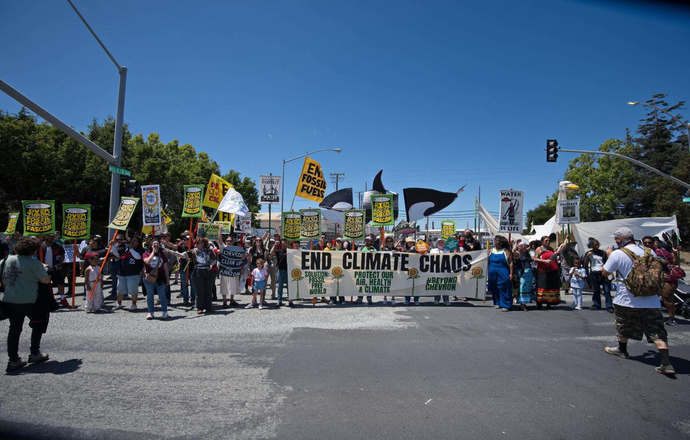
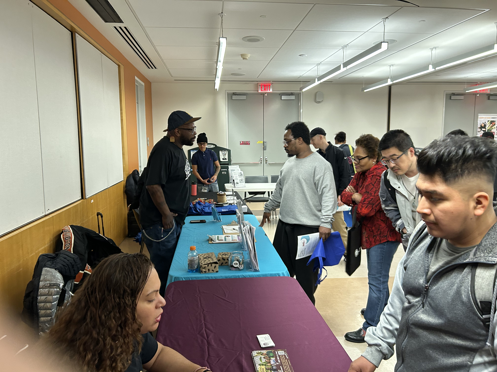
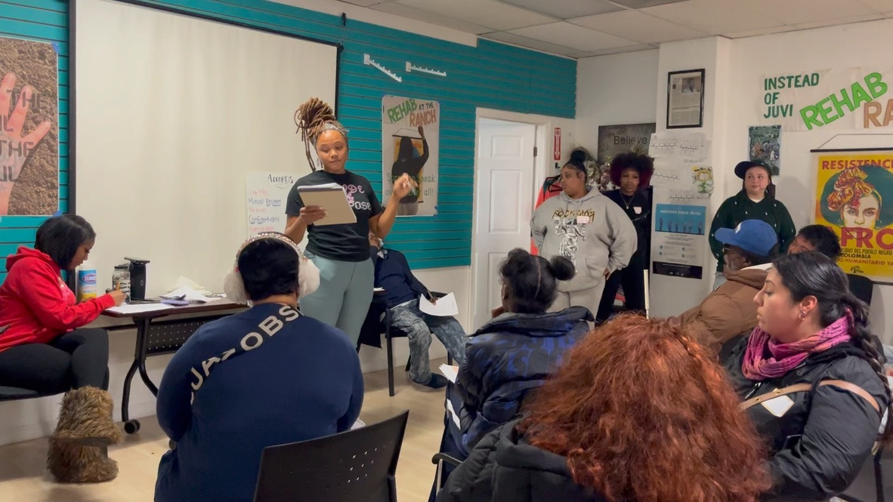
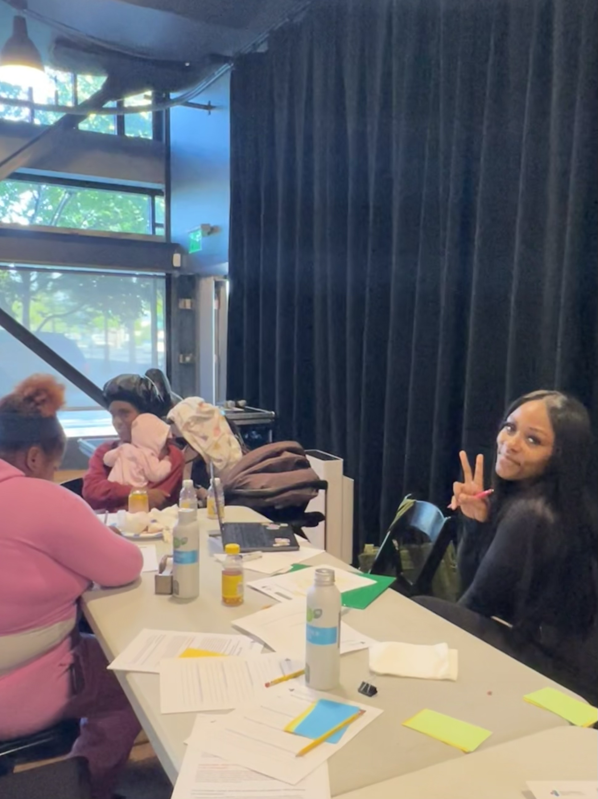

Not just surviving.
Thriving.
Richmond is at a crossroads. The economy that has shaped our city for over a century is changing, and what comes next hasn't been decided yet — legacy residents owning the land and businesses they built, clean air for our kids, good jobs, elders aging in peace. Or more of the same. We know which future we want, and Richmond has always known how to fight for it.
A community full of visionaries
Richmond is home to those who are resilient. Right now we have a real chance to shape what comes next, and we know our community's voice can lead the way. This is a community full of brilliant, visionary residents with deep love for our Rich City, and powerful visions for the future we want for our children, our elders, and generations still to come.
Our Future Economy came together to listen to residents' dreams and needs, gather the plans and lessons already in progress across Richmond, and channel that knowledge into action. We're blessed to have so many organizations engaging residents in the work of dreaming, envisioning, and fighting for a better Richmond — through this project, you can connect with them and become part of that effort.
This site belongs to every Richmond resident. Learn the history of how we got here. See what your neighbors are already building. Add your voice to what comes next — because the people who should shape Richmond's future are the people who live here.
What are your dreams for Richmond?
Our neighbors, already building





The paths forward
How we got here
The history behind Richmond's changing economy, and the community work already reshaping it.
What we're building toward
Community ownership, land and housing, and healing — the future residents are calling for.
Real projects, underway now
Fourteen concrete projects connecting community vision to funding and action.
The plans already on the table
City, regional, and community plans that already call for this work.
What it will take
The systems — scale, governance, finance, and time — a just transition still needs.
Imagining an economy beyond fossil fuels
Movement For A More Just World
How To Plan For An Economy Beyond Fossil Fuels